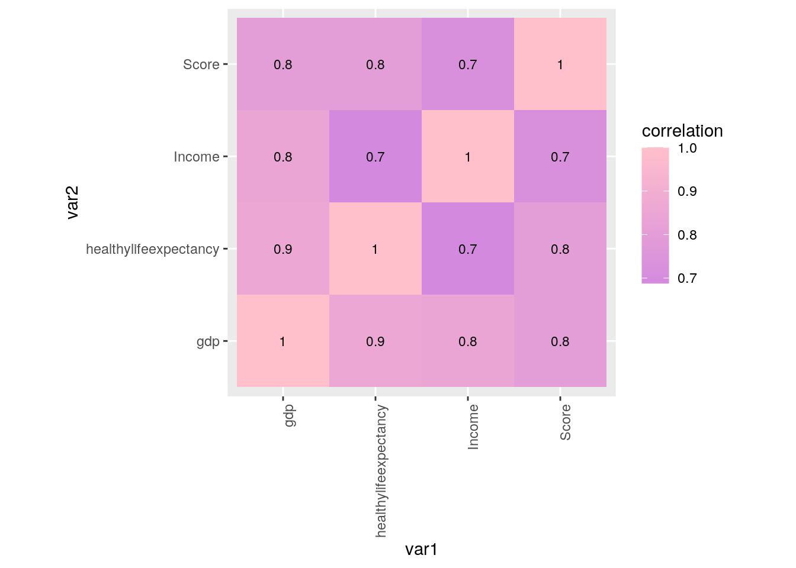
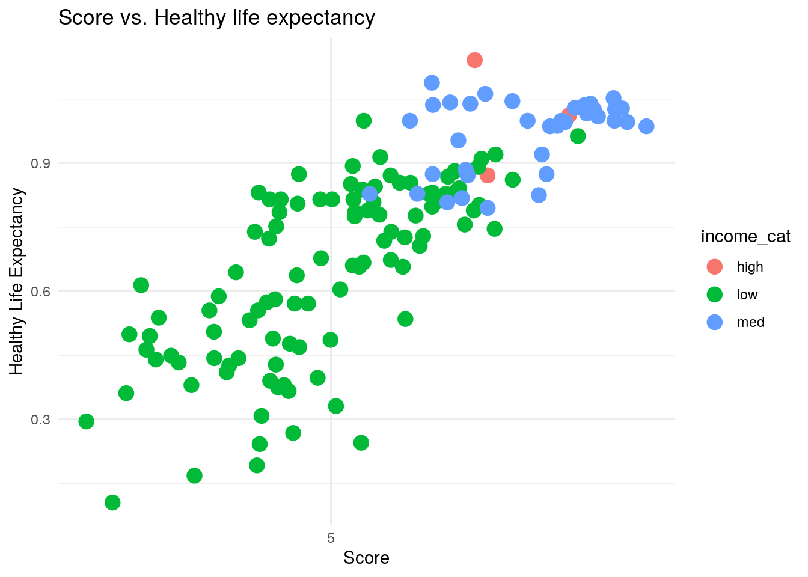
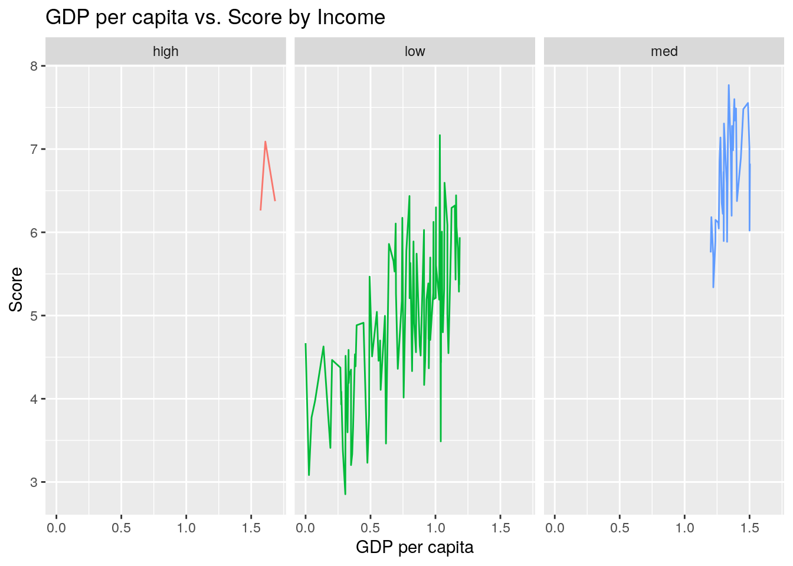
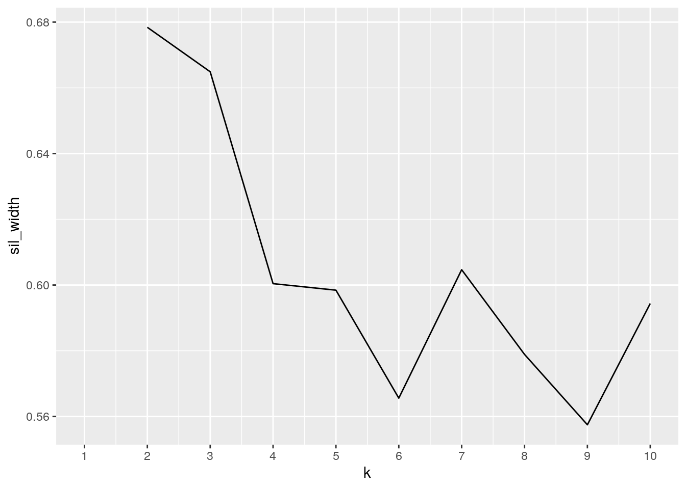
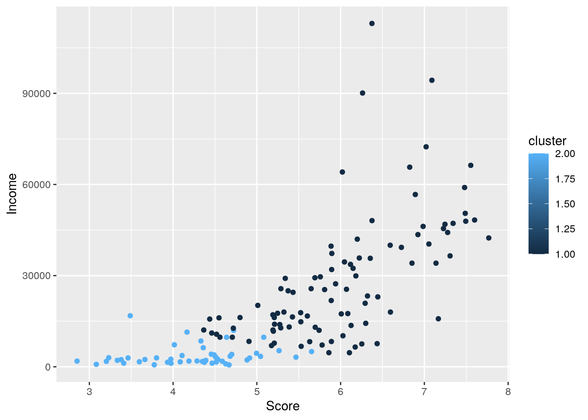

My two datasets include the World Happiness Report data and the income of different countries in the year of 2019 for my project. The World Happiness Report dataset originally included the overall rank, country or region, score (of happiness), GDP per capita, social support, healthy life expectancy, freedom to make life choices, generosity, and perception of corruption as its variables. I wanted to focus on less variables, so I ommited the ‘Overall rank’, ‘Social support’, ‘Freedom to make life choices’, ‘Generosity’, and ‘Perception of corruption’ variables of the World Happiness Report dataset using the select function in R. For the second dataset, the variables originally included the country and the income from the years of 1800 to 2040. I used to the select function in R to narrow the dataset to the country and the year 2019 as the variables.
These two datasets were acquired from Kaggle and Gapminder respectively. I chose these datasets because I am currently taking a Sociology course at the University of Texas called, “Society, Health and Happiness”. The World Happiness Report was mentioned in class, and I found it interesting to see which countries were considered to be the happiest in the globe. A possible association that can arise in this project is the more income that an individual has, the more likely that is to contribute to the country’s overall happiness score.
Finding & Importing Data
# Tidyverse was loaded onto the R server.
library(tidyverse)## ── Attaching packages ─────────────────────────────────────── tidyverse 1.3.0 ──## ✓ ggplot2 3.3.3 ✓ purrr 0.3.4
## ✓ tibble 3.0.4 ✓ dplyr 1.0.2
## ✓ tidyr 1.1.2 ✓ stringr 1.4.0
## ✓ readr 1.4.0 ✓ forcats 0.5.0## ── Conflicts ────────────────────────────────────────── tidyverse_conflicts() ──
## x dplyr::filter() masks stats::filter()
## x dplyr::lag() masks stats::lag()happinessdata <- read_csv("happinessdata2019.csv")##
## ── Column specification ────────────────────────────────────────────────────────
## cols(
## `Overall rank` = col_double(),
## `Country or region` = col_character(),
## Score = col_double(),
## `GDP per capita` = col_double(),
## `Social support` = col_double(),
## `Healthy life expectancy` = col_double(),
## `Freedom to make life choices` = col_double(),
## Generosity = col_double(),
## `Perceptions of corruption` = col_double()
## )# The first data set, the World Happiness Report was imported into R. Five variables from this dataset was removed to narrow the focus on less variables later on.
happinessdata1 <- happinessdata %>% select(-`Overall rank`, -`Social support`, -`Freedom to make life choices`, -Generosity, -`Perceptions of corruption`)
names(happinessdata1)[names(happinessdata1) == "Country or region"] <- "country"
names(happinessdata1)[names(happinessdata1) == "Healthy life expectancy"] <- "healthylifeexpectancy"
names(happinessdata1)[names(happinessdata1) == "GDP per capita"] <- "gdp"
happinessdata1## # A tibble: 156 x 4
## country Score gdp healthylifeexpectancy
## <chr> <dbl> <dbl> <dbl>
## 1 Finland 7.77 1.34 0.986
## 2 Denmark 7.6 1.38 0.996
## 3 Norway 7.55 1.49 1.03
## 4 Iceland 7.49 1.38 1.03
## 5 Netherlands 7.49 1.40 0.999
## 6 Switzerland 7.48 1.45 1.05
## 7 Sweden 7.34 1.39 1.01
## 8 New Zealand 7.31 1.30 1.03
## 9 Canada 7.28 1.36 1.04
## 10 Austria 7.25 1.38 1.02
## # … with 146 more rows# The same was done to the second data set. The Income dataset from 2019 was imported and the variable/year, "2019" was selected to match with the first dataset.
incomedata <- read_csv("income_per_person2019.csv")##
## ── Column specification ────────────────────────────────────────────────────────
## cols(
## .default = col_double(),
## country = col_character()
## )
## ℹ Use `spec()` for the full column specifications.incomedata1 <- incomedata %>% select(country, '2019')
names(incomedata1)[names(incomedata1) == "2019"] <- "Income"
incomedata1## # A tibble: 193 x 2
## country Income
## <chr> <dbl>
## 1 Afghanistan 1760
## 2 Albania 12700
## 3 Algeria 14000
## 4 Andorra 53200
## 5 Angola 5540
## 6 Antigua and Barbuda 24500
## 7 Argentina 17500
## 8 Armenia 9730
## 9 Australia 45500
## 10 Austria 46900
## # … with 183 more rowsWhat I did here was untidy the two datasets first. I started with the World Happiness Report dataset and used the pivot_wider function. By assigning names_from to the variable “country” and values_from to the variable “Score”, the data now has 158 columns instead of rows. We then tidied the data using the pivot_longer function. The same was done with the second dataset, however we assigned names_from and values_from both the variables “country” and “Income” respectively. We then tidied the dataset by using the pivot_longer function.
# The Happiness Report dataset was first untidied using the pivot_wider function.
mergeddata.hap.tidy <- happinessdata1 %>% pivot_wider(names_from = "country", values_from = "Score")
head(mergeddata.hap.tidy)## # A tibble: 6 x 158
## gdp healthylifeexpe… Finland Denmark Norway Iceland Netherlands Switzerland
## <dbl> <dbl> <dbl> <dbl> <dbl> <dbl> <dbl> <dbl>
## 1 1.34 0.986 7.77 NA NA NA NA NA
## 2 1.38 0.996 NA 7.6 NA NA NA NA
## 3 1.49 1.03 NA NA 7.55 NA NA NA
## 4 1.38 1.03 NA NA NA 7.49 NA NA
## 5 1.40 0.999 NA NA NA NA 7.49 NA
## 6 1.45 1.05 NA NA NA NA NA 7.48
## # … with 150 more variables: Sweden <dbl>, `New Zealand` <dbl>, Canada <dbl>,
## # Austria <dbl>, Australia <dbl>, `Costa Rica` <dbl>, Israel <dbl>,
## # Luxembourg <dbl>, `United Kingdom` <dbl>, Ireland <dbl>, Germany <dbl>,
## # Belgium <dbl>, `United States` <dbl>, `Czech Republic` <dbl>, `United Arab
## # Emirates` <dbl>, Malta <dbl>, Mexico <dbl>, France <dbl>, Taiwan <dbl>,
## # Chile <dbl>, Guatemala <dbl>, `Saudi Arabia` <dbl>, Qatar <dbl>,
## # Spain <dbl>, Panama <dbl>, Brazil <dbl>, Uruguay <dbl>, Singapore <dbl>,
## # `El Salvador` <dbl>, Italy <dbl>, Bahrain <dbl>, Slovakia <dbl>, `Trinidad
## # & Tobago` <dbl>, Poland <dbl>, Uzbekistan <dbl>, Lithuania <dbl>,
## # Colombia <dbl>, Slovenia <dbl>, Nicaragua <dbl>, Kosovo <dbl>,
## # Argentina <dbl>, Romania <dbl>, Cyprus <dbl>, Ecuador <dbl>, Kuwait <dbl>,
## # Thailand <dbl>, Latvia <dbl>, `South Korea` <dbl>, Estonia <dbl>,
## # Jamaica <dbl>, Mauritius <dbl>, Japan <dbl>, Honduras <dbl>,
## # Kazakhstan <dbl>, Bolivia <dbl>, Hungary <dbl>, Paraguay <dbl>, `Northern
## # Cyprus` <dbl>, Peru <dbl>, Portugal <dbl>, Pakistan <dbl>, Russia <dbl>,
## # Philippines <dbl>, Serbia <dbl>, Moldova <dbl>, Libya <dbl>,
## # Montenegro <dbl>, Tajikistan <dbl>, Croatia <dbl>, `Hong Kong` <dbl>,
## # `Dominican Republic` <dbl>, `Bosnia and Herzegovina` <dbl>, Turkey <dbl>,
## # Malaysia <dbl>, Belarus <dbl>, Greece <dbl>, Mongolia <dbl>, `North
## # Macedonia` <dbl>, Nigeria <dbl>, Kyrgyzstan <dbl>, Turkmenistan <dbl>,
## # Algeria <dbl>, Morocco <dbl>, Azerbaijan <dbl>, Lebanon <dbl>,
## # Indonesia <dbl>, China <dbl>, Vietnam <dbl>, Bhutan <dbl>, Cameroon <dbl>,
## # Bulgaria <dbl>, Ghana <dbl>, `Ivory Coast` <dbl>, Nepal <dbl>,
## # Jordan <dbl>, Benin <dbl>, `Congo (Brazzaville)` <dbl>, Gabon <dbl>,
## # Laos <dbl>, `South Africa` <dbl>, …# The Happiness Report dataset was next tidied using the pivot_longer function.
mergeddata.hap.tidy2 <- mergeddata.hap.tidy %>% pivot_longer(!gdp & !healthylifeexpectancy, names_to = "country", values_to = "Score", values_drop_na = T)
mergeddata.hap.tidy2 <- mergeddata.hap.tidy2[c("country", "Score", "gdp", "healthylifeexpectancy")]
head(mergeddata.hap.tidy2)## # A tibble: 6 x 4
## country Score gdp healthylifeexpectancy
## <chr> <dbl> <dbl> <dbl>
## 1 Finland 7.77 1.34 0.986
## 2 Denmark 7.6 1.38 0.996
## 3 Norway 7.55 1.49 1.03
## 4 Iceland 7.49 1.38 1.03
## 5 Netherlands 7.49 1.40 0.999
## 6 Switzerland 7.48 1.45 1.05# The Income dataset was first untidied using the pivot_wider function.
mergeddata.in.tidy <- incomedata1 %>% pivot_wider(names_from = "country", values_from = "Income")
head(mergeddata.in.tidy)## # A tibble: 1 x 193
## Afghanistan Albania Algeria Andorra Angola `Antigua and Ba… Argentina Armenia
## <dbl> <dbl> <dbl> <dbl> <dbl> <dbl> <dbl> <dbl>
## 1 1760 12700 14000 53200 5540 24500 17500 9730
## # … with 185 more variables: Australia <dbl>, Austria <dbl>, Azerbaijan <dbl>,
## # Bahamas <dbl>, Bahrain <dbl>, Bangladesh <dbl>, Barbados <dbl>,
## # Belarus <dbl>, Belgium <dbl>, Belize <dbl>, Benin <dbl>, Bhutan <dbl>,
## # Bolivia <dbl>, `Bosnia and Herzegovina` <dbl>, Botswana <dbl>,
## # Brazil <dbl>, Brunei <dbl>, Bulgaria <dbl>, `Burkina Faso` <dbl>,
## # Burundi <dbl>, Cambodia <dbl>, Cameroon <dbl>, Canada <dbl>, `Cape
## # Verde` <dbl>, `Central African Republic` <dbl>, Chad <dbl>, Chile <dbl>,
## # China <dbl>, Colombia <dbl>, Comoros <dbl>, `Congo, Dem. Rep.` <dbl>,
## # `Congo, Rep.` <dbl>, `Costa Rica` <dbl>, `Cote d'Ivoire` <dbl>,
## # Croatia <dbl>, Cuba <dbl>, Cyprus <dbl>, `Czech Republic` <dbl>,
## # Denmark <dbl>, Djibouti <dbl>, Dominica <dbl>, `Dominican Republic` <dbl>,
## # Ecuador <dbl>, Egypt <dbl>, `El Salvador` <dbl>, `Equatorial Guinea` <dbl>,
## # Eritrea <dbl>, Estonia <dbl>, Eswatini <dbl>, Ethiopia <dbl>, Fiji <dbl>,
## # Finland <dbl>, France <dbl>, Gabon <dbl>, Gambia <dbl>, Georgia <dbl>,
## # Germany <dbl>, Ghana <dbl>, Greece <dbl>, Grenada <dbl>, Guatemala <dbl>,
## # Guinea <dbl>, `Guinea-Bissau` <dbl>, Guyana <dbl>, Haiti <dbl>,
## # Honduras <dbl>, Hungary <dbl>, Iceland <dbl>, India <dbl>, Indonesia <dbl>,
## # Iran <dbl>, Iraq <dbl>, Ireland <dbl>, Israel <dbl>, Italy <dbl>,
## # Jamaica <dbl>, Japan <dbl>, Jordan <dbl>, Kazakhstan <dbl>, Kenya <dbl>,
## # Kiribati <dbl>, Kuwait <dbl>, `Kyrgyz Republic` <dbl>, Lao <dbl>,
## # Latvia <dbl>, Lebanon <dbl>, Lesotho <dbl>, Liberia <dbl>, Libya <dbl>,
## # Lithuania <dbl>, Luxembourg <dbl>, Madagascar <dbl>, Malawi <dbl>,
## # Malaysia <dbl>, Maldives <dbl>, Mali <dbl>, Malta <dbl>, `Marshall
## # Islands` <dbl>, Mauritania <dbl>, Mauritius <dbl>, …# The Income dataset was then tidied using the pivot_longer function.
mergeddata.in.tidy2 <- mergeddata.in.tidy %>% pivot_longer(cols = everything())
head(mergeddata.in.tidy2)## # A tibble: 6 x 2
## name value
## <chr> <dbl>
## 1 Afghanistan 1760
## 2 Albania 12700
## 3 Algeria 14000
## 4 Andorra 53200
## 5 Angola 5540
## 6 Antigua and Barbuda 24500The two datasets were merged using an inner join using the common variable ID “country” and “Country or region”. I decided to use an inner join because I wanted to match the same countries from the World Happiness Report dataset to the countries of the income dataset. The countries that existed in the income dataset that was not matched in the World Happiness Report dataset was dropped. There is assumed no problems with dropping these cases because they would not be helpful in looking at both of the datasets if it was not present in one or the other.
# Dplyr was loaded onto the R server.
library(dplyr)
# An inner join was used to merge the two variables together.
mergeddata <- happinessdata1 %>% inner_join(incomedata1, by = "country")
glimpse(mergeddata)## Rows: 143
## Columns: 5
## $ country <chr> "Finland", "Denmark", "Norway", "Iceland", "Net…
## $ Score <dbl> 7.769, 7.600, 7.554, 7.494, 7.488, 7.480, 7.343…
## $ gdp <dbl> 1.340, 1.383, 1.488, 1.380, 1.396, 1.452, 1.387…
## $ healthylifeexpectancy <dbl> 0.986, 0.996, 1.028, 1.026, 0.999, 1.052, 1.009…
## $ Income <dbl> 42400, 48300, 66300, 47900, 50500, 59000, 47200…library(dplyr)
# The six core dplyr functions were used.
mergeddata <- mergeddata %>% mutate(income_cat = ifelse(Income > 75333.66, "high", ifelse(Income<=75333.66 & 28250<=Income, "med", "low")))
mean(mergeddata$Score)## [1] 5.414573mergeddata %>% select(country, Score, Income) %>% filter(Score >= 5.414573) %>% arrange(desc(Score)) ## # A tibble: 71 x 3
## country Score Income
## <chr> <dbl> <dbl>
## 1 Finland 7.77 42400
## 2 Denmark 7.6 48300
## 3 Norway 7.55 66300
## 4 Iceland 7.49 47900
## 5 Netherlands 7.49 50500
## 6 Switzerland 7.48 59000
## 7 Sweden 7.34 47200
## 8 New Zealand 7.31 36500
## 9 Canada 7.28 44200
## 10 Austria 7.25 46900
## # … with 61 more rows# Summary statistics were used for each of the numeric variables.
scoresummary <- mergeddata %>% summarize(mean_score=mean(Score, na.rm=T), med_score=median(Score, na.rm=T), sd_score=sd(Score, na.rm=T), min_score=min(Score, na.rm =T), max_score=max(Score, na.rm =T))
scoresummary## # A tibble: 1 x 5
## mean_score med_score sd_score min_score max_score
## <dbl> <dbl> <dbl> <dbl> <dbl>
## 1 5.41 5.39 1.14 2.85 7.77incomesummary <- mergeddata %>% summarize(mean_income=mean(Income, na.rm=T), med_income=median(Income, na.rm=T), sd_income=sd(Income, na.rm=T), min_income=min(Income, na.rm =T), max_income=max(Income, na.rm =T))
incomesummary## # A tibble: 1 x 5
## mean_income med_income sd_income min_income max_income
## <dbl> <dbl> <dbl> <dbl> <dbl>
## 1 20047. 13100 20554. 631 113000gdpsummary <- mergeddata %>% summarize(mean_gdp = mean(gdp, na.rm=T), sd_gdp=sd(gdp, na.rm=T), min_gdp=min(gdp, na.rm =T), max_gdp=max(gdp, na.rm =T))
gdpsummary## # A tibble: 1 x 4
## mean_gdp sd_gdp min_gdp max_gdp
## <dbl> <dbl> <dbl> <dbl>
## 1 0.907 0.400 0 1.68lifeexpsummary <- mergeddata %>% summarize(mean_lifeexp=mean(healthylifeexpectancy, na.rm=T), med_lifeexp=median(healthylifeexpectancy, na.rm=T), sd_lifeexp=sd(healthylifeexpectancy, na.rm=T), min_lifeexp=min(Income, na.rm =T), max_lifeexp=max(healthylifeexpectancy, na.rm =T))
lifeexpsummary## # A tibble: 1 x 5
## mean_lifeexp med_lifeexp sd_lifeexp min_lifeexp max_lifeexp
## <dbl> <dbl> <dbl> <dbl> <dbl>
## 1 0.732 0.798 0.234 631 1.14# The group_by function was used to create a summary statistics.
groupsummarydata1 <- mergeddata %>% group_by(income_cat) %>% summarize(mean_gdp=mean(gdp, na.rm=T), sd_gdp=sd(gdp, na.rm=T), median_gdp=median(gdp, na.rm=T), max_gdp=max(gdp, na.rm=T), min_gdp=min(gdp, na.rm=T))## `summarise()` ungrouping output (override with `.groups` argument)groupsummarydata1## # A tibble: 3 x 6
## income_cat mean_gdp sd_gdp median_gdp max_gdp min_gdp
## <chr> <dbl> <dbl> <dbl> <dbl> <dbl>
## 1 high 1.62 0.0571 1.61 1.68 1.57
## 2 low 0.736 0.329 0.81 1.19 0
## 3 med 1.34 0.0856 1.34 1.50 1.20groupsummarydata2 <- mergeddata %>% group_by(income_cat) %>% summarize(mean_score=mean(Score, na.rm=T), sd_score=sd(Score, na.rm=T), median_score=median(Score, na.rm=T), max_score=max(Score, na.rm=T), min_score=min(Score, na.rm=T))## `summarise()` ungrouping output (override with `.groups` argument)groupsummarydata2## # A tibble: 3 x 6
## income_cat mean_score sd_score median_score max_score min_score
## <chr> <dbl> <dbl> <dbl> <dbl> <dbl>
## 1 high 6.58 0.449 6.37 7.09 6.26
## 2 low 4.94 0.900 4.95 7.17 2.85
## 3 med 6.69 0.657 6.84 7.77 5.34The mutate function was first used to create a categorical variable. The income variable was categorized. I then decided to find the mean in order to select countries with a happiness score higher than the average, which was 5.414573. I then used the arrange function in order to arrange the countries by highest to lowest scores. Next, we created summary statistics for each of the numeric variable. The summary statistics were the mean, standard deviation, median, maximum and minimum. I found it interesting that the average income for all the countries is 20046.94, and average score was 5.414573. Lastly, the group_by function was used to create two summary statistics.
# A correlation heatmap of the data was created.
corheatmap <- mergeddata %>% select_if(is.numeric) %>% cor(use= "pair") %>% as.data.frame %>% rownames_to_column("var1") %>% pivot_longer(-1, names_to="var2", values_to="correlation")
corheatmap %>% ggplot(aes(var1, var2, fill=correlation)) + scale_fill_gradient2(low="yellow", mid = "blue", high="pink") + geom_tile() + geom_text(aes(label=round(correlation, 1)), color="black", size=3) + theme(axis.text.x = element_text(angle = 90, hjust = 1)) + coord_fixed()
# 2 ggplots were created.
ggplot(data=mergeddata, aes(x = Score, y =healthylifeexpectancy)) + geom_point(size = 4, aes(color=income_cat), stat = "summary", fun = mean) + theme_minimal() +ggtitle("Score vs. Healthy life expectancy") + ylab("Healthy Life Expectancy") + xlab("Score") + scale_x_continuous(breaks=seq(0, 50, 5))
secondplot <- ggplot(data = mergeddata, aes(x = gdp, y = Score, color = income_cat, group = income_cat)) + geom_line() + theme(legend.position = "none") + ggtitle("GDP per capita vs. Score by Income") + ylab("Score") + xlab("GDP per capita")
secondplot + facet_wrap(~income_cat)
A correlation heatmap was created with all four numeric variables. Looking at the results, we can find that the correlations between the variables are quite strong. The highest correlations were between the healthy life expectancy and gdp with a correlation of 0.9. This correlation makes sense because a healthy life expectancy can be influenced by the increase in gross domestic product per capita income. The lowest correlation scores was 0.7 between different variable pairs (score and income, and score and healthy life expectancy).
The first ggplot was created and examines the relationship between the happiness score and healthy life expectancy when grouped by the income categories. The ggplot shows that the two variables are positively correlated when grouped by income. As the healthy life expectancy increase, so does the happiness score.
The second ggplot was created and examines the relationship between the GDP per capita and the score when grouped by categorical income. The plot shows that there is a lot of variation between the two variables which means it is possibly not correlated that well. On average, countries with lower income tend to have a lower happiness score and lower GDP per capita.
library(cluster)
# The number of clusters were determined.
data_cluster <- mergeddata %>% dplyr::select(Score, Income, healthylifeexpectancy, gdp)
sil_width <- vector()
for (i in 2:10) {
kms <- kmeans(data_cluster, centers = i)
silh <- silhouette(kms$cluster, dist(data_cluster))
sil_width[i] <- mean(silh[,3])
}
#A visualization of principal components is seen through the ggplot
ggplot() + geom_line(aes(x = 1:10, y = sil_width)) + scale_x_continuous(name = "k", breaks = 1:10)## Warning: Removed 1 row(s) containing missing values (geom_path).
# PAM was used to do a cluster analysis
pam <- mergeddata %>% select(Score, Income, healthylifeexpectancy, gdp) %>% scale %>% pam(2)
pam## Medoids:
## ID Score Income healthylifeexpectancy gdp
## [1,] 44 0.5738087 0.2652992 0.3977425 0.6384187
## [2,] 123 -1.0729573 -0.8843352 -1.2346454 -1.4370104
## Clustering vector:
## [1] 1 1 1 1 1 1 1 1 1 1 1 1 1 1 1 1 1 1 1 1 1 1 1 1 1 1 1 1 1 1 1 1 1 1 1 1 1
## [38] 1 1 1 1 1 1 1 1 1 1 1 1 1 1 1 1 1 1 1 1 1 1 1 1 2 1 1 1 1 1 1 2 1 1 1 1 1
## [75] 1 1 1 1 2 1 1 1 1 1 1 1 1 2 2 1 2 2 1 2 1 2 1 1 2 2 2 2 2 2 1 1 2 1 2 2 2
## [112] 2 1 2 1 2 2 1 2 2 2 2 2 2 2 2 2 2 2 2 2 2 2 2 2 2 2 2 2 2 2 2 2
## Objective function:
## build swap
## 1.240976 1.187136
##
## Available components:
## [1] "medoids" "id.med" "clustering" "objective" "isolation"
## [6] "clusinfo" "silinfo" "diss" "call" "data"# Created the visualization of the cluster
finalcluster <- mergeddata %>% select(Score, Income, healthylifeexpectancy, gdp) %>% mutate(cluster = pam$clustering)
ggplot(finalcluster, aes(x = Score, y = Income, color = cluster)) + geom_point()
The number of clusters were first determined using the silhouette function. A cluster analysis was ran by using the PAM function. There were a total number of two clusters, however these clusters were based on all the numeric variables. The following visualization of the cluster shows that the two variables possible correlation.
knitr::opts_chunk$set(echo = TRUE, eval = TRUE, fig.align = "center", warning = F, message = F,
tidy=TRUE, tidy.opts=list(width.cutoff=60), R.options=list(max.print=100))